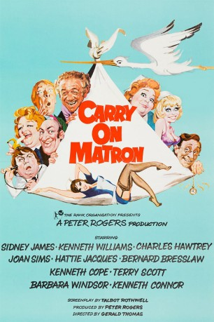
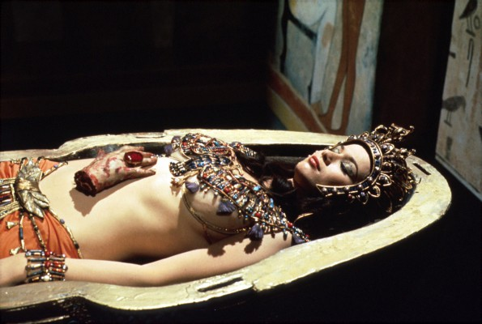

#11796 Carry On 23 - Die total verrückte Oberschwester
Alternativ: Carry On Matron (Englischer Titel)
 
 IMDB-Wertung: 6.2 / 10
IMDB-Wertung: 6.2 / 10  Metascore: 0
Metascore: 0 
Sir Bernard Cutting leitet die Geburtsklinik Finisham Maternity Hospital. In der Position muss er sich mit Schwestern, Ärzten und Patienten herumärgern. Doch in dem nach außen hin so eloquent, professionell und abgeklärt wirkenden Mann brodelt es. In ihm wohnt ein regelrechter Hypochonder. Auf den Rat des Psychiaters Dr. Francis A. Goode wendet sich Cutting als Ausgleich dem anderen Geschlecht zu. Ziel seiner Avancen ist die Oberschwester der Klinik. Unterdessen wollen Sid Carter, Sohn Cyril und Kumpane in die Klinik von Sir Bernard Cutting einbrechen und Anti-Baby-Pillen stehlen. Dafür muss sich Cyril in eine Schwesternuniform kleiden und versuchen, an die Pillen zu kommen. Dabei läuft er der jungen, sexy Schwester Susan Ball in die Arme, die schnell merkt, dass hinter der Maskerade ein Mann steckt. Was soll Cyril nun tun? Es ist klar, dass alles in einem großen Chaos endet.
Jahr: 1972
Dauer: 85 Minuten
FSK: 12
Land: England Studio: Pilot FilmverleihTonspuren:
Untertitel:
Auflösung: SD (576x336) Größe: 699 MB
Genre: Komödie, Krimi
Regisseur: Gerald Thomas
Drehbuch: Talbot Rothwell
Soundtrack: Eric Rogers
Darsteller:
 Sidney James als Sid Carter
Sidney James als Sid Carter Kenneth Williams als Sir Bernard Cutting
Kenneth Williams als Sir Bernard Cutting Charles Hawtrey als Dr. Francis A. Goode
Charles Hawtrey als Dr. Francis A. Goode Joan Sims als Mrs. Tidey
Joan Sims als Mrs. Tidey Hattie Jacques als Matron
Hattie Jacques als Matron Bernard Bresslaw als Ernie Bragg
Bernard Bresslaw als Ernie Bragg Kenneth Cope als Cyril Carter
Kenneth Cope als Cyril Carter Terry Scott als Dr. Prodd
Terry Scott als Dr. Prodd Barbara Windsor als Nurse Susan Ball
Barbara Windsor als Nurse Susan Ball Kenneth Connor als Mr. Tidey
Kenneth Connor als Mr. Tidey- Jacki Piper als Sister
 Bill Maynard als Freddy
Bill Maynard als Freddy Patsy Rowlands als Evelyn Banks
Patsy Rowlands als Evelyn Banks-  Valerie Leon als Jane Darling
 Margaret Nolan als Mrs. Tucker
Margaret Nolan als Mrs. Tucker- Wendy Richard als Miss Willing
- Madeline Smith als Mrs. Pullitt
- Juliet Harmer als Mrs. Bentley (scenes deleted)
- Shakira Caine als Nurse in Photo on Dr. Prodd's Wall (archive footage) (uncredited)
- Elizabeth Knight als Nurse in Photo on Dr. Prodd's Wall (archive footage) (uncredited)
 Tina Simmons als Nurse (uncredited)
Tina Simmons als Nurse (uncredited)- Yutte Stensgaard als Nurse in Photo on Dr. Prodd's Wall (archive footage) (uncredited)
- Derek Francis als Arthur
- Amelia Bayntun als Mrs. Jenkins
- Brian Osborne als Ambulance Driver
- Gwendolyn Watts als Frances Kemp
- Valerie Shute als Miss Smethurst
- Michael Nightingale als Pearson
- Zena Clifton als Au Pair Girl
- Bill Kenwright als Reporter
- Robin Hunter als Mr. Darling
- Jack Douglas als Twitching Father
- Rodney Cardiff als Outpatient (uncredited)
- Angela Cheyne als Nurse (uncredited)
- Laura Collins als Nurse (uncredited)
- Shirley English als Lady in Hospital (uncredited)
- Jill Goldston als Nurse (uncredited)
- Gilly Grant als Nurse in Bath (uncredited)
- Alan Harris als Photographer (uncredited)
- Walter Henry als Wedding Guest (uncredited)
- Lindsay Marsh als Shapely Nurse (uncredited)
- Lesley North als Nurse (uncredited)
- Bill Westley Sr. als Wedding Guest (uncredited)
Datei: X:\7+mehr(A-Z)\Carry On\Carry On 23 - Die total verrückte Oberschwester (1972, FSK12, 576x336).avi seit 20.09.2019
Festplatte: HD Collection-7+mehr(A-Z)+Person
 Es gibt insgesamt 33 Filme in der Gruppe '7+mehr(A-Z)\Carry On'
Es gibt insgesamt 33 Filme in der Gruppe '7+mehr(A-Z)\Carry On'